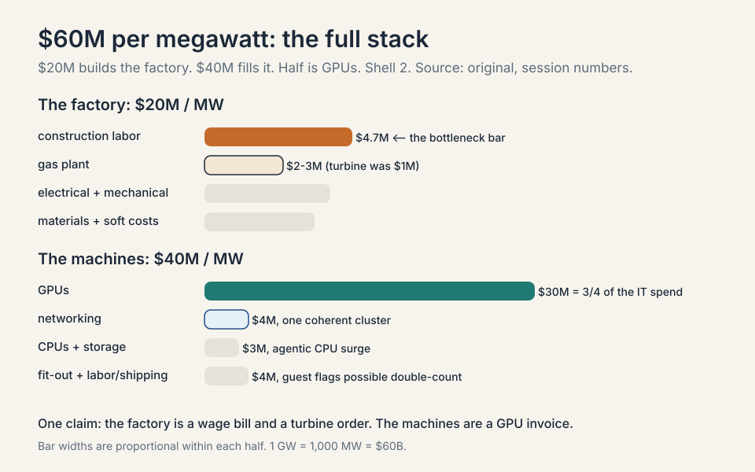
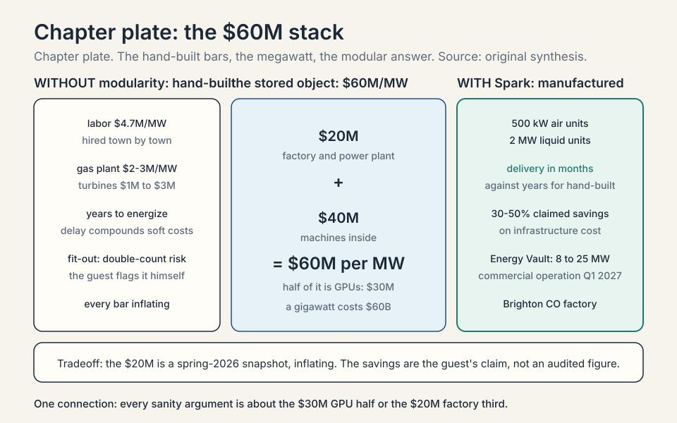
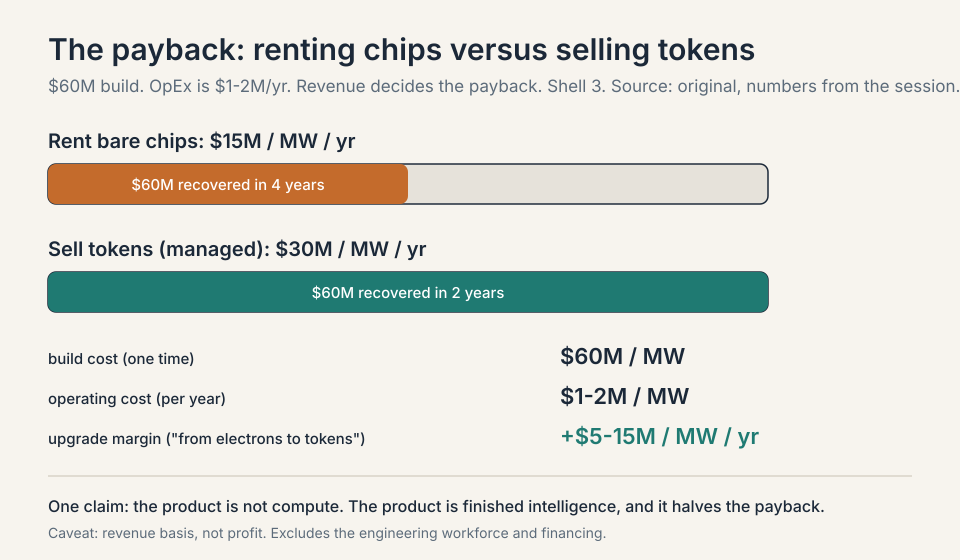
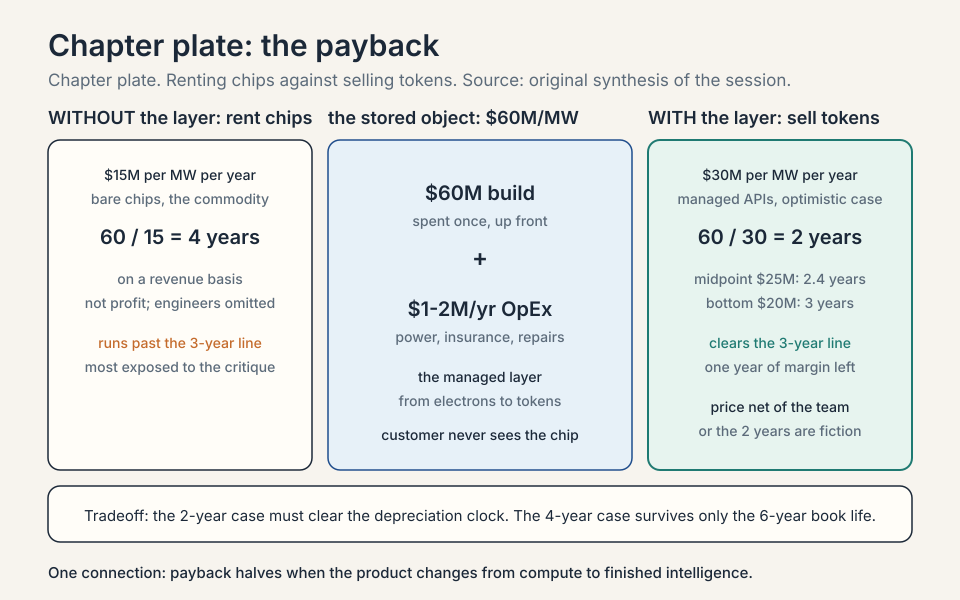
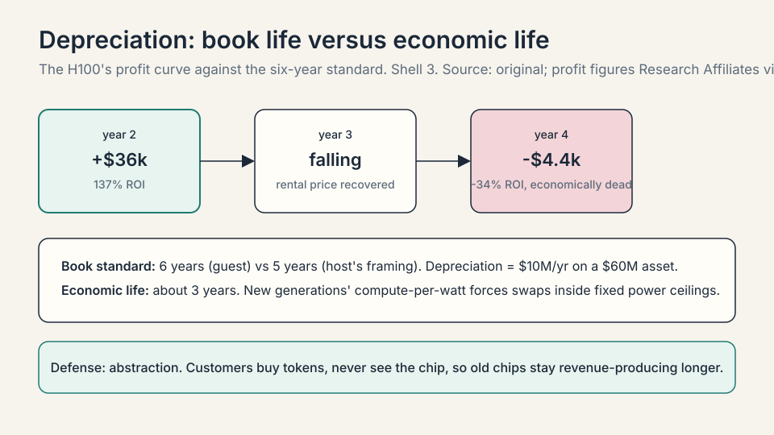
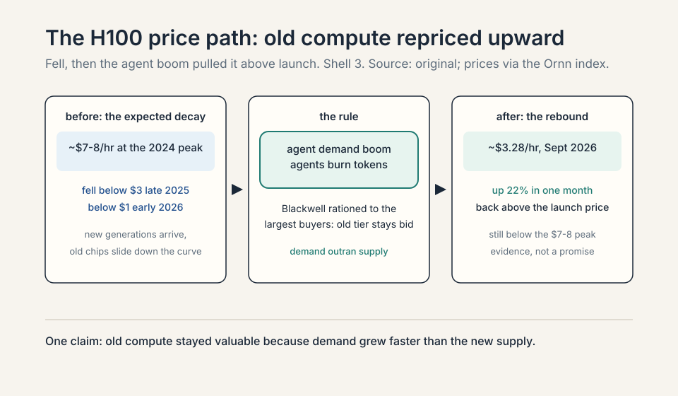
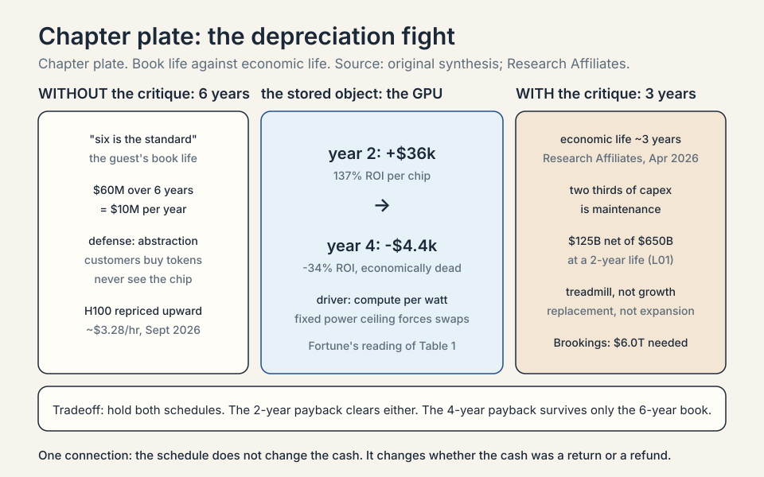
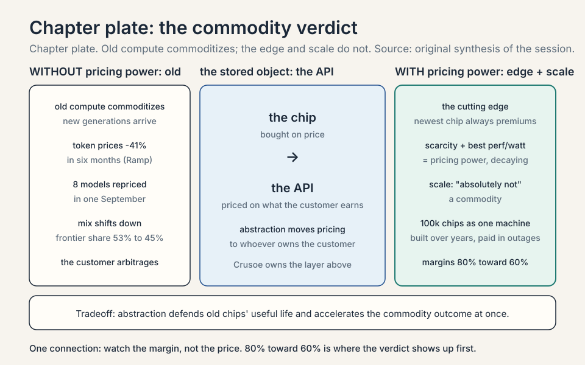
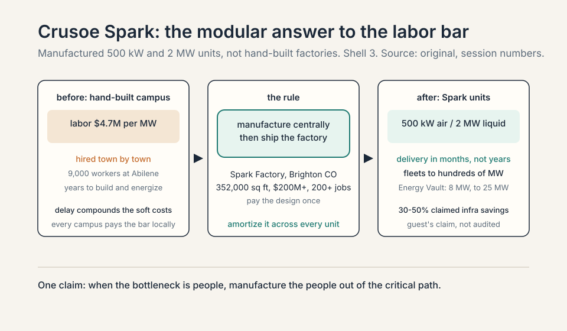
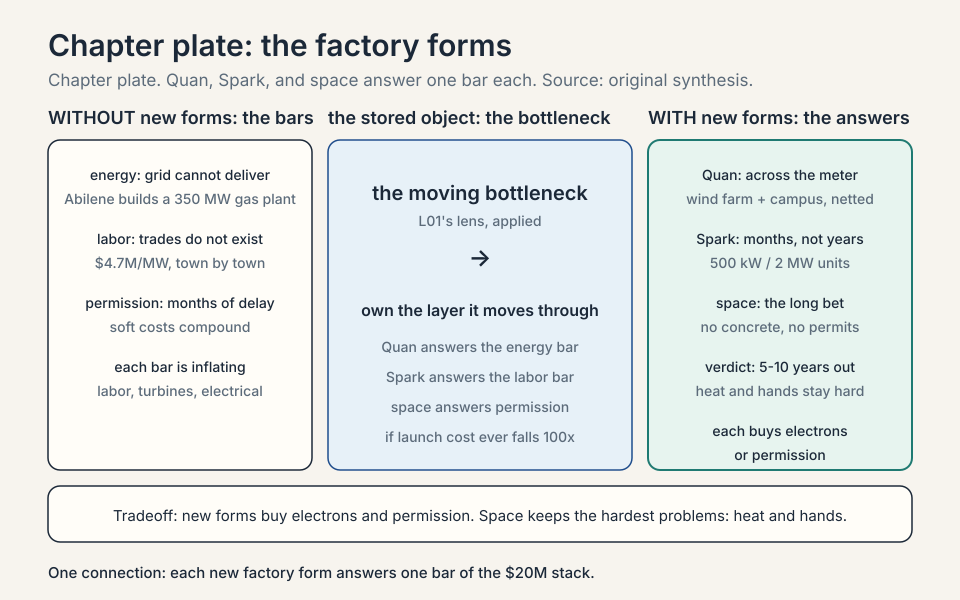

Lecture 2: The $60 Million Megawatt
Video blocked (ad-blocker or local file mode).
Watch on YouTubeVideo not loading? Watch on YouTube
Guest: Chase Lochmiller, Co-Founder and CEO of Crusoe. This lesson covers the second half of the session: the full cost stack and unit economics.
Coverage and sourcing
This lesson follows the second half of the MS&E 435 (Economics of the AI Supercycle, Spring 2026, instructor Apoorv Agrawal) session “Building AI Factories,” with guest Chase Lochmiller, co-founder and CEO of Crusoe. L01 followed the first half: the CapEx chart (CapEx: capital expenditure, money spent to build long-lived assets), the production function, the energy-first playbook, and the factory walk. This lesson is the accountant’s half: the full cost stack per megawatt (a million watts of power draw, the “per seat” unit of the data center business), the payback math, the depreciation fight (depreciation: how accountants spread a purchase over its useful life), the commodity debate (a commodity: a good bought purely on price, with no meaningful difference between sellers), and the new factory forms. No transcript or captions exist for the video, so segment-level mapping of claims to timestamps is not possible. The coverage map at the end of the chapter maps every major session claim to the section that covers it. Figures and claims marked “October 2026” are updates added after the session, each with its source.
The question from L01
L01 ended with the thesis: about $730 billion of CapEx is a bet on digital labor. This chapter asks the accountant’s version of the same question. If you had $100 of spend, where does it go? The guest answers with the full cost stack, normalized per megawatt, and every number below is his, from the session, with his own caveats stated where he stated them.
The megawatt (MW) is the natural unit for pricing AI factories because everything in the building, from the substation to the cooling loop, scales with power. Think of it as the “per seat” of the data center business. A 1 gigawatt (GW) campus is 1,000 megawatts. The session’s unit price is roughly $60M per MW: about $20M for the factory, about $40M for the machines inside. That is $60 billion for a 1 GW cluster. Hold those three numbers. The rest of the chapter opens each of them.
The factory: $20M per megawatt
The first $20M of the $60M buys the factory itself: the power plant and the building, before a single GPU arrives. The guest breaks it out on a per-megawatt basis, and the bottom bar of his chart is the one he lingers on. Two honesty notes before the bars. First, the guest built the chart that afternoon, and he says so on the record. Treat the numbers as directional, not audited. Second, he flags that he may be double-counting the tenant fit-out bar, and rounds the total anyway.

Subchapter: labor, $4.7M per MW
The largest bar inside the factory cost is people. This is capitalized construction labor, not operating payroll: the wages paid to build the thing, booked as part of the asset. Run the multiplication the guest implies. A 1 GW campus is 1,000 MW. At $4.7M per MW, that is $4.7 billion in construction wages for one campus. Abilene, the session’s reference campus, put roughly 9,000 workers on site daily in a town of 120,000 people. That is the hiring problem made visible: the trades do not exist in the needed numbers where the campuses are going.
Subchapter: why labor is the hardest bar
The guest is blunt: not enough electricians, welders, plumbers, or general construction workers, with many gigawatt projects competing for the same trades at the same time. Here is why this bar resists every procurement trick. A gas turbine can be ordered from a catalog. A transformer (a device that steps power down from transmission voltage to usable voltage) ships from a factory. Labor must be hired town by town, trained, housed, and retained through a multi-year build, and every other gigawatt project in the country is bidding for the same crews. The electrician’s rate rises because the next campus over will pay more. This bar has no inventory to draw down and no second source. It is the single largest line inside the factory cost, and it is the one that cannot be ordered from a catalog.
Subchapter: the gas plant, $2-3M per MW
Crusoe built a roughly 350 MW natural gas plant at Abilene to energize the cluster, because the grid could not deliver the power on the needed timeline. At $3M per MW, that one plant is about $1.05 billion of factory cost: 350 times 3 equals 1,050, in millions. The striking detail is the inflation. A gas turbine that used to cost about $1M per MW now costs about $3M per MW: a threefold increase. The mechanism is concentration. Only a handful of manufacturers build large gas turbines (the guest names GE Vernova, Siemens, Mitsubishi Heavy Industries, Pratt and Whitney, and Caterpillar’s Solar), and they did not expand capacity as every data center developer rushed to add generation at once. When the scarce input has five suppliers and the demand curve goes vertical, the suppliers price like monopolists. The guest’s aside: it has been good to be a GE Vernova shareholder.
Subchapter: electrical equipment
The full chain from high voltage to the rack: transformers, power distribution centers, and medium- and low-voltage switchgear (the protection and routing layer: breakers and switches that isolate faults and direct power where it is needed). A transformer is a device that changes voltage levels: it steps power down from transmission voltage to usable voltage, at the cost of some energy lost as heat. Power arrives at the Abilene substation and steps down from 34.5 kV (34,500 volts) to 480 or 415 volts at the rack. The guest’s image: your home breaker panel, at the scale of a city. L01 walked this path in detail. This chapter prices it as one of the lines inside the $20M.
Subchapter: mechanical equipment
Chillers, plumbing, and air handlers. The cooling plant is a recirculating chilled-water loop: each building holds about 1 million gallons of water, and cooling distribution units move that water to the GPU racks and back. The number that surprises people is the consumption, not the inventory. Annual water consumption is about the same as a single-family home, because the loop is filled once and then recirculated. That distinction matters in West Texas, where water is scarce and the neighbors are watching. The inventory is a million gallons. The draw on the aquifer is a household. Confuse the two and you misprice both the cost and the politics.
Subchapter: materials
Steel, concrete, and site work. The guest’s detail: Crusoe runs its own concrete batch plant on site, pouring 24/7. A batch plant mixes concrete at the construction site instead of trucking it in, which removes the delivery bottleneck when a campus needs foundations at a pace no local supplier can match. This is vertical integration applied to cement: when the moving bottleneck is the concrete supply, you buy the bottleneck. Materials are the least interesting bar on the chart and the most honest one. Nobody argues about the price of concrete. They argue about the labor to pour it.
Subchapter: soft costs
Insurance, financing (servicing the construction loan), siting, and commissioning. Commissioning is the testing phase: every system is run, measured, and tuned before the first GPU arrives, because a fault found at 10 MW is cheap and a fault found at 1 GW is a disaster. Soft costs are the tax that complexity charges. They scale with project size and with delay. A campus that energizes on schedule pays them once. A campus that slips pays them twice.
Subchapter: tenant fit-out, and the double count
Everything inside the data hall that is not the computers: remote power panels, hot-aisle containment, fan walls, cooling distribution units. A remote power panel distributes electricity from the main feed to rows of racks. Hot-aisle containment is the ducting that separates the hot exhaust air from the cold intake air so cooling stays efficient. The guest flags, on the record, that he may be double-counting this bar against the mechanical and electrical bars, and rounds the total anyway. Keep that flag in mind when the chapter later rounds to $60M. The number is honest about its own error bars.
Subchapter: the $20M consolidation
Add it up: roughly $20M per MW, or $20 billion per gigawatt, for the power plant plus the building, before one GPU is racked. Ask whether that $20M is going up or down, and the guest’s answer is up: gas generation, labor, and electrical equipment are all inflating under demand. The $20M is a snapshot from one afternoon in spring 2026, not a law. What moves it: the labor bar (trades shortage), the turbine bar (five suppliers, no capacity adds), and speed (every month of delay compounds the soft costs).
$20M per MW: the factory before the machines labor $4.7M (largest bar; cannot be ordered) gas plant $2-3M (350 MW at Abilene; turbines 3x) electrical step-down chain, 34.5 kV to 480/415 V mechanical chillers; 1M-gallon loop, home-scale use materials steel, concrete; own batch plant, 24/7 soft costs insurance, loan service, commissioning fit-out panels, containment, CDUs (double-count risk)
The machines: $40M per megawatt
The next $40M buys the IT: the computers that go inside. The split, which the guest calls forward-looking, is the most concentrated cost picture in the course. “Forward-looking” is doing real work in that sentence: the mix shifts toward the newest hardware generation, so the $30M GPU bar is priced at frontier-chip prices, not at the blended price of the installed fleet.
$40M per MW: the machines inside the factory GPUs $30M (three quarters of the IT spend) networking $4M (NVLink: GPU-to-GPU links, InfiniBand: cluster fabric) CPUs + storage $3M in-room fit-out $3M labor/shipping $1M
Subchapter: GPUs, $30M
Three quarters of the IT CapEx goes to one vendor’s chips. A GPU is a graphics processing unit: a chip built to do thousands of simple math operations in parallel, which is exactly what training a neural network needs. The newest racks hold 72 GPUs on one NVLink domain: a single high-speed fabric so the chips share data as one machine. NVLink is Nvidia’s chip-to-chip interconnect: the wiring and protocol that lets GPUs in one rack talk to each other at very high speed. Concentration is the point: half of the entire $60M per MW, $30M of $60M, is GPUs from one supply chain. That concentration is both the margin story and the risk story of the whole supercycle.
Subchapter: the 80 percent margin
The guest puts a number on the concentration: Nvidia commands roughly 80% gross margins today. A gross margin is the share of revenue left after the direct cost of making the product: an 80% margin means $8 of every $10 of revenue is profit above manufacturing cost. On the $30M GPU bar, that is about $24M of margin above cost per megawatt. His expectation: competition does its work over time, and margins settle toward standard silicon levels, call it 60%. “Capitalism is a powerful force.” The mechanism is entry. Custom silicon and rival chips do not need to beat Nvidia’s chips. They need to be good enough to force the price down. The margin compresses from the edge, not from the center.
Subchapter: networking, $4M
The racks must then be joined into one coherent cluster, typically over InfiniBand or RDMA over Ethernet, so a single training job can span every chip in every building. InfiniBand is a high-speed networking standard built for supercomputers: very high bandwidth, very low latency. RDMA over Ethernet (RoCE) does a similar job on standard Ethernet wiring. NVLink joins GPUs inside the rack. InfiniBand or RoCE joins racks into the cluster. At Abilene this means all chips across all data centers operate as one workload. Networking is only 10 percent of the IT spend, but it is what makes the $30M of GPUs behave as one machine. A cluster that cannot synchronize is $30M of isolated chips. The failure mode is silent: the GPUs all run, the job finishes, and it finishes late, because the network starved the math.
Subchapter: CPUs and storage, $3M
The surprise inside this bar is a CPU shortage. A CPU is the central processing unit: the general-purpose chip that runs the operating system and orchestrates work. Agentic workloads need large numbers of CPUs to orchestrate the GPU work: agents run code, call tools, manage state, and each of those steps spends CPU before the GPU ever sees a token. So CPU demand is surging alongside GPU demand, and the CPUs are scarce too. The $3M bar is the footprint of the agent era inside the machine budget. The old mental model said the GPU was the computer and the CPU was the janitor. The agent era flipped it: the CPU is the manager, and managers are now the bottleneck.
Subchapter: fit-out and deployment, $4M
About $3M of in-the-room fit-out and about $1M for deployment and shipping. Unboxing, racking, cabling, and burn-in at gigawatt scale is a logistics operation with its own line item. Read the $40M as $41M before rounding, if you want the strict version. The chapter rounds with him.
Subchapter: the custom-silicon escape valve
What is used where, October 2026: the frontier cluster stack is Nvidia Blackwell and GB200/GB300 systems. The escape valve from the 80% margin is custom silicon: Google’s TPUs, Amazon’s Trainium, Meta’s MTIA, Microsoft’s Maia. A TPU is Google’s Tensor Processing Unit: Google’s own AI chip, built as an alternative to Nvidia GPUs. The guest’s own warning runs the other direction: a lab may one day spend a couple hundred billion on its own chips, 80 percent as effective per chip but far more numerous. The arithmetic of that threat: 80% effectiveness at 50% of the price is a winning trade if you can buy enough of them. Nobody has yet, at frontier scale. The threat is what keeps the 80% honest, or what will.
Subchapter: the $60M consolidation
The guest’s total: roughly $60M per MW, which is $60 billion for a 1 GW cluster. Two ratios to carry. Half the total is GPUs: $30M of $60M. The factory is one third: $20M of $60M. Every argument about the supercycle’s sanity is an argument about one of those two ratios: whether the GPU half stays valuable, and whether the factory third can be built cheaper. The next two sections take those arguments in order.

The payback: does it earn?
Now the accountant’s real question. You have spent $60M per MW. What comes back? The guest gives three numbers: the operating cost, the rental revenue, and the upgrade. The key question of the chapter: what decides between the four-year and the two-year outcome? Two things. First, depreciation: how long each bar of the $60M stays valuable. Second, whether the product is raw compute or finished intelligence.

Subchapter: OpEx, $1-2M per MW per year
OpEx is operating expenditure: the cost of running the asset, as opposed to building it. Power, insurance, and the on-site labor that repairs and replaces failed cables and GPUs. The guest stresses this is limited. The big money is all upfront. That ratio is the whole attraction of the business: spend $60M once, then collect rent against $1-2M a year of running cost. It is also the trap. When the upfront number is this large, small errors in the revenue line compound into enormous errors in the return.
Subchapter: the $15M rent line
Revenue of about $15M per MW per year, renting out bare chips. Divide the $60M build by $15M a year and you get a four-year payback, on a revenue basis. “On a revenue basis” means before subtracting OpEx and before the costs the OpEx omits: it is $60M divided by $15M, which is 4. The guest presents it as rough, assembled that afternoon, but directionally the number the street argues about. Four years to earn back the build, renting the chips as a commodity.
Subchapter: the missing costs
The guest’s own caveat: the $1-2M OpEx omits the engineering workforce and other costs. Read that twice. The four-year payback divides by revenue, not by profit, and the cost line it divides by is incomplete. A serious underwrite adds the engineers who keep the cluster healthy, the software teams, the financing cost of the $60M, and the refresh reserve for the hardware. The guest does not hide this. He states it. The honest version of the chapter keeps his caveat attached to his number.
Subchapter: the $30M token line
The upgrade is managed services. Renting chips is the commodity product. The guest’s title for the deck is “from electrons to tokens,” and the margin lives in the tokens. Add a managed layer that hosts models and serves an API endpoint, and revenue rises by $5-15M per MW per year, to roughly $30M per MW in the optimistic case. The payback halves: about two years. The mechanism is the abstraction ladder (abstraction: hiding the hardware behind the service). Bare chips sell compute. Managed services sell answers. Answers price at what the customer earns from them, not at what the chip costs. That gap is the business.
Subchapter: Crusoe Cloud and the chip abstraction
The mechanism is abstraction. Crusoe builds services so the customer never knows whether the work ran on an A100, an H100, or an MI300. The guest’s analogy: you do not check which Intel or AMD chip runs your Zoom call. You care about the service. As applications abstract the hardware, older chips stay revenue-producing longer, and the depreciation curve stretches. Abstraction is also the moat. Whoever owns the customer relationship owns the pricing power. The chip becomes an input. The service becomes the product.
Subchapter: the managed-services uplift, worked
Take the midpoint of the guest’s $5-15M range: $10M of added revenue per MW per year. Revenue goes from $15M to $25M. Payback goes from 4 years to 2.4 years: 60 divided by 25 is 2.4. At the top of the range, $30M, payback is 2 years flat. At the bottom, $20M, payback is 3 years. The uplift is not free. It costs the engineering organization that builds and runs the managed layer, which is exactly the cost line the OpEx omits. Price the uplift net of the team that delivers it, or the two-year payback is a gross-margin fiction.
Subchapter: the financing layer, October 2026
By October 2026 the financing question got louder than the payback question. The five hyperscalers’ projected 2026 capex of about $800.5B exceeds their combined operating cash flow of about $707.1B: capex is 113 percent of cash flow (IEEE ComSoc Technology Blog, September 2026, summarizing the Brookings paper). Two estimators, same direction: this $800.5B figure bundles company guidance with analyst estimates, while the October 2026 table below sums the four companies’ own raised guidances to about $730B. The buildout is no longer self-funded. The industry must borrow. The Brookings paper (Columbia professor Stijn Van Nieuwerburgh, presented at Brookings) then asks what the borrowed build must earn: about $3.7 trillion of annual AI revenue by 2032 to produce a 10 percent unlevered return (unlevered: before any borrowing, the return as if the project were all equity), which is roughly 9.2 percent of projected 2032 US GDP. In market units, that is about $5.5 per GPU-hour at full utilization, or $6.9 at 80 percent. The paper’s own sensitivity: if IT gear lasts three years instead of six, the needed revenue jumps to about $6.0 trillion. The payback math in this chapter is per factory. The industry math adds debt, and debt adds a clock.
| The financing layer | Number | Source |
|---|---|---|
| 2026 hyperscaler capex, projected | ~$800.5B | company guidance, analyst estimates |
| Combined operating cash flow | ~$707.1B | same |
| Capex as share of cash flow | 113% (800.5 / 707.1) | computed |
| Annual AI revenue needed by 2032, 6-year IT life | ~$3.7T | Brookings (Van Nieuwerburgh) |
| Needed if IT gear lives 3 years | ~$6.0T | Brookings sensitivity |
| Implied GPU-hour price | ~$5.5 at full use, $6.9 at 80% | Brookings |

Depreciation: how long does a GPU stay valuable?
Depreciation is how accountants spread a purchase over its useful life. A $60M asset that lasts 6 years costs $10M a year on the books. If it lasts 3, it costs $20M. For AI factories, the depreciation schedule is the whole debate on Wall Street. It decides whether the $60M is a growth asset or a treadmill.

Subchapter: the six-year standard
The host asks whether GPUs depreciate over the standard 5 years that public companies use for computers. The guest answers that six is the standard, then reframes the question: Crusoe will use compute “so long as it is valuable to us or to someone else.” The reframe matters. Book life is an accounting choice. Economic life is a market verdict. The guest is saying the second decides, and the first follows. Nobody in the session disputes the six. The fight is over whether the market agrees.
Subchapter: the H100 price chart, the evidence
The evidence he offers is a pricing chart for the H100. It debuted about three years ago, the price fell as expected, and then, with the agent demand boom, the rental price rose back above its launch price. Blackwell pricing, via SemiAnalysis, shows a similar pattern. The September 2026 print confirms the direction: H100 rental prices rose about 22 percent in a month to roughly $3.28 per hour, still below the $7-8 peak of 2024 but well above the sub-$1 trough of early 2026 (Ornn compute-power index, via TradingKey, September 7, 2026) Old chips stayed valuable because demand grew faster than the new supply. That is the guest’s whole depreciation defense in one chart: the market repriced old compute upward.

Subchapter: why the rebound happened
Two forces. First, the agent demand boom: agents burn tokens at a rate chat never did, and every token needs a chip. Second, the new supply was spoken for: Blackwell systems were largely reserved for the largest customers, which kept demand for older H100 clusters strong. The rebound is not a law. It is a market clearing at one moment: demand outrunning supply at the old tier while the new tier rations itself to the biggest buyers. If Blackwell supply ever catches up, the old tier reprices down. The chart is evidence, not a promise.
Subchapter: abstraction as the defense
The mechanism behind the defense is abstraction, defined above: the customer buys the service, not the chip. Crusoe’s services hide whether the work ran on an A100, an H100, or an MI300. As applications abstract the hardware, older chips stay revenue-producing longer, and the depreciation curve stretches. The Zoom analogy carries the point: nobody prices a Zoom call by the CPU generation in the server. They price it by the seat. Tokens are the seats. Chips are the servers. The longer the abstraction holds, the longer the six-year book life survives contact with the three-year critique below.
Subchapter: the three-year critique, with numbers
The counterweight arrived after the session. Research Affiliates published “When Will AI Be Both Powerful and Profitable?” (April 2026). The paper’s core finding: observed H100 hourly rates fell from scarcity-driven peaks near $8 in 2024 to below $3 by late 2025 and below $1 in early 2026, and as new generations arrive, pricing converges toward the marginal cost of the most efficient hardware. During the first three years, returns on capital are substantial. In year four, revenue falls below total economic cost. The chip remains in service because it still covers marginal operating expenses, but it no longer earns a return on invested capital. Economically, the productive life of the asset is closer to three years than to the five-year accounting depreciation. Fortune’s April 2026 summary of the paper priced it per chip: about $36,000 of annual profit in year 2 (137 percent ROI), turning to about a $4,400 annual loss by year 4 (negative 34 percent ROI). Treat those two figures as Fortune’s reading of the paper’s Table 1, not as the session’s numbers.
Subchapter: the power-ceiling driver
The driver is not wear. Chips do not wear out in three years. Each new chip generation delivers sharply better compute-per-watt, and data centers face hard power ceilings: the campus has a fixed megawatt envelope, and the grid will not give it more. To hold capacity inside that envelope, you must swap old chips for efficient new ones. The old chip still works. It just cannot pay its share of the power bill against a new chip that does twice the work per watt. Economic obsolescence precedes physical obsolescence by years. That is the sentence the whole critique hangs on.
Subchapter: the maintenance arithmetic
The study’s conclusion: roughly two thirds of hyperscaler AI capex is maintenance, replacing obsolete hardware, and the economic life of AI hardware is about three years, not the five to six on the books. L01 ran the dollar version: under a two-year economic life, net capital formation in 2026 would be just $125B of the $650B headline, so most of the spend is replacement, not growth. On this view, the bulk of the CapEx is a treadmill. The thesis survives only if token revenue per megawatt stays ahead of the replacement rate. That race is the real subject of this chapter, and the number to watch is token revenue per MW, quarterly.
Subchapter: both schedules, held honestly
Nobody knows which schedule is right. The guest says so directly, and the honest reader holds both numbers. If the six-year book life holds, the four-year payback clears with room to spare and the two-year payback is a windfall. If the three-year economic life is right, the two-year payback must finish before the obsolescence line: at $30M per MW per year, $60M is recovered in two years with one year of margin left. At $15M per MW per year, the four-year payback runs past the line, and renting bare chips is the bet most exposed to the critique. The depreciation schedule does not change the cash. It changes whether the cash was a return or a refund.

The commodity question
The host presses the debate the industry was having that week: is compute a commodity? The definition from the coverage note still governs: a good bought purely on price, with no meaningful difference between sellers. The guest’s answer splits by age and by scale. Both sides of the debate can be right on different horizons.
Subchapter: old compute commoditizes
As new generations arrive, last year’s chips fall down the price curve. The September 2026 price war is the evidence, and it is unusually clean. Vendor price cuts in one month:
| Model | Input / output per M tokens | Date |
|---|---|---|
| OpenAI GPT-6 Astra | $10 / $50 | Sep 3 |
| DeepSeek V4.1 Flash | $0.30 / $1.20 | Sep 10 |
| xAI Grok 4.7 | $2 / $6 | Sep 21 |
| Anthropic Claude Opus 5.5 | $4 / $20 | Sep 22 |
| OpenAI GPT-6 Sol | $2 / $10 | Sep 22 |
| OpenAI GPT-6 Luna | $0.10 / $0.50 | Sep 22 |
| Anthropic Claude Sonnet 5.5 | $2 / $10 | Sep 28 |
| Google Gemini 4 Argon | $2 / $10 (intro) | Sep 30 |
(Digital Applied Q3 2026 price tracker, read October 3, 2026. DeepSeek’s is the peak rate, and off-peak is half.) Ramp’s AI Index measured the enterprise result: the effective price per million tokens fell 41 percent to $0.68 by early September 2026, from a $1.15 peak in March (Ramp AI Index, September 2026). Frontier models (Opus, Fable, Sol) fell to 45 percent of token share, down from a 53 percent August peak, as volume moved to cheaper standard models. The commodity logic is winning at the token layer. Prices fall. Mix shifts down. The customer arbitrages.
Subchapter: the cutting edge does not
Two things resist commoditization. First, the cutting edge: the newest hardware always commands a premium, which is the history of the IT industry. The frontier chip is scarce by definition: it is the one the fabs cannot yet make enough of. Scarcity plus the best performance per watt equals pricing power. That power decays as the next generation arrives, which is exactly the old-compute story above. The two claims do not conflict. They describe the same curve at different points.
Subchapter: scale does not
Second, scale: operating at very large scale is hard to replicate, and the guest calls it “absolutely not a commodity.” The argument is operational, not technological. Anyone can buy the chips. Few can run 100,000 of them as one machine, keep them fed with power and data, replace the failures without stopping the job, and do it at a cost per token that clears the market. That capability is built over years and paid for in outages. It does not commoditize on a price sheet.
Subchapter: the margin path, 80 to 60
On margins, the guest is specific. Nvidia commands roughly 80% gross margins today. His expectation: competition does its work over time, and margins settle toward standard silicon levels, call it 60%. “Capitalism is a powerful force.” The path is the custom-silicon escape valve plus rival merchant chips plus the sheer profit signal calling in entrants. Watch the margin, not the price. The price can fall while the margin holds, if costs fall faster. The margin is where the commodity verdict shows up first.
| The margin path, 80 to 60 | Rough gross margin | Driver |
|---|---|---|
| Nvidia today | ~80% | frontier-chip scarcity; best performance per watt |
| Standard silicon | ~60% | competition does its work: “capitalism is a powerful force” |
| Custom-silicon threat | ~80% as effective per chip, far more numerous | Google TPU, Amazon Trainium, Meta MTIA, Microsoft Maia |
Subchapter: what accelerates the commodity outcome
Abstraction. If customers buy tokens through a managed API and never know which chip ran the work, chips become interchangeable inputs and pricing power moves up the stack to whoever owns the customer relationship. That is exactly the business Crusoe is building toward with its managed-services layer. The irony is clean: the same abstraction that defends the depreciation schedule (old chips stay useful) accelerates the commodity outcome (chips become invisible). Crusoe wins either way, because it owns the layer above the chip. The chip vendor does not.
| The three-way commodity verdict | Commodity? | Evidence |
|---|---|---|
| Old compute | yes, commoditizes | token prices down 41% in six months (Ramp); eight models repriced in September 2026 |
| The cutting edge | no | the newest hardware always commands a premium: scarcity plus best performance per watt |
| Scale | no | “absolutely not a commodity”: running 100,000 chips as one machine, built over years |

Two more factories: Quan and Spark
The session gives two more data points that sharpen the unit economics. Both are answers to bars in the $20M stack. Quan answers the energy bar. Spark answers the labor bar.
Subchapter: Quan, Texas
A town of 1,500 people with 3,500 workers on site, drawing labor from nearby Amarillo. The ratio is the point: the workforce is more than twice the town. The site pairs the data center with an on-site wind farm in one of the windiest parts of the United States, in an arrangement the guest calls across the meter. Behind the meter means power generated on site and consumed on site, never touching the grid. Across the meter is the guest’s term for the next step: the campus generates its own power, sells the surplus into the grid (lowering local ratepayers’ bills), and draws from the grid when the wind drops. The customer is undisclosed but described as very large. The economics: the wind farm turns an energy cost into a grid asset, and the ratepayers become constituents instead of opponents.
flowchart LR
wind[On-site wind farm] --> campus[Data center campus]
wind --> grid[Local grid: surplus sold]
grid --> campus
Subchapter: the across-the-meter arithmetic
When the wind blows hard and the campus needs less than the farm makes, the surplus flows to the grid and the local ratepayer’s bill falls. When the wind drops, the campus draws from the grid like any large customer. The campus is never islanded. It is netted. The political economy is as important as the electrical economy: a data center that lowers local bills permits faster than one that only consumes. The across-the-meter model buys the two scarcest inputs at once, electrons and permission.
Subchapter: Crusoe Spark, the modular answer
A modular, self-contained AI data center, manufactured centrally to cut the labor bottleneck. Crusoe launched Spark in June 2025 and builds the units at its Spark Factory in Brighton, Colorado: 352,000 square feet, over $200M invested, 200-plus jobs, with the first factory-produced modules expected in Q3 2026. Deployments scale from hundreds of kilowatts to tens or hundreds of megawatts by combining units, with delivery in as little as three months against years for a traditional build. The session’s unit sizes: 500 kW air-cooled units and 2 MW liquid-cooled units, deployable in fleets. The liquid-cooled version targets the ultra-high-density GPU clusters. This is the answer to the $4.7M/MW labor bar: stop building every factory by hand.
Subchapter: the Spark savings claim
Claimed savings: 30 to 50 percent on the infrastructure cost. That is the guest’s claim from the session, not an audited figure. The mechanism is manufacturing economics. A hand-built campus pays the labor bar at local rates under schedule pressure. A factory-built unit pays it once, in the design, and then amortizes it across every unit the line produces. The October 2026 evidence direction: Energy Vault is deploying Spark units at its Snyder, Texas campus. Phase 1 is 8 MW of powered shell, expandable to 25 MW, targeting commercial operation in Q1 2027 (Energy Vault press release, July 27, 2026). Crusoe’s Aalo nuclear partnership will deploy a Spark unit at Idaho National Lab in 2027, powered by a 50 MWe (megawatts of electrical output, as opposed to thermal) microreactor pod (Crusoe and Aalo Atomics announcement, July 30, 2026: a proof of concept, with Aalo Pod fleet deployments at Crusoe data centers targeted by end of 2029). A Wall Street Journal report (September 2026) says a Denver-area plant could eventually produce 1 GW of Spark capacity a year. “Eventually” is doing the work in that sentence. One gigawatt a year would equal everything Crusoe operates today.
Subchapter: Spark and the vertical-integration thesis
Does modularity threaten the vertical-integration thesis from L01? No. It extends it. Spark is vertical integration one level deeper: the company that owns energy and buildings now owns the factory’s manufacturing too. L01’s rule was that the hedge against a moving bottleneck is to own the layer the bottleneck moves through. The bottleneck moved to construction labor. Crusoe bought a factory that makes factories. The decision rule: when the bottleneck is people, manufacture the people out of the critical path.

Space data centers: the long bet
The final topic is the one the host clearly enjoys: data centers in space. The decision rule for the whole section: launch cost must fall by two orders of magnitude, a factor of 100, or the trade does not close, no matter how attractive the other lines look. The guest is genuinely engaged. Crusoe has a partnership with Starcloud, which the guest says has launched the first H100s into space [uncertain: the guest’s claim, and no independent confirmation was found]. He runs the trade honestly: the attractions are the costs the $20M/MW stack would skip, and the problems are physics.
Subchapter: what vanishes in orbit
No concrete foundations. No permitting and no grid approvals. No millions of fiber strands: optics replace copper. No power procurement: the sun is the generator. Each of these is a line item in the $20M factory stack or a delay in the soft costs. The interest in space is a backhanded measure of how expensive building on Earth has become. If orbit looks attractive, it is because the ground game got that costly.
Subchapter: what stays in orbit
Thermal management: vacuum sheds heat only by radiation, and radiators are heavy. Operations: no astronaut reseats a failed GPU, so the cluster suffers natural depreciation with no repair path. In a terrestrial data center, GPUs fail constantly at scale and technicians reseat or return them. In space, a dead chip stays dead, and the cluster degrades from day one. Launch cost: unless payload costs fall by two orders of magnitude, the math does not close. Everything rides on that last number. Two orders of magnitude is a factor of 100. Nothing else in the trade matters until that moves.
| What vanishes in orbit | What stays in orbit |
|---|---|
| concrete foundations | thermal: vacuum sheds heat only by radiation, radiators are heavy |
| permitting, grid approvals | operations: no repair path, a dead chip stays dead |
| millions of fiber strands (optics instead) | launch cost: must fall by two orders of magnitude, a factor of 100 |
| power procurement (the sun generates) | the two hardest problems: heat and hands |
Subchapter: the verdict and the orbital race
His verdict: not material in 5 years, probably not in 10, but a major part of intelligent infrastructure over the longer run. Space removes the two scarcest inputs on Earth, land-adjacent power and permission, and keeps the two hardest problems, heat and hands. The October 2026 orbital update lives in L01: Starcloud-1 flew in November 2025, Starcloud-2 slipped to 2027 rideshares, and Google’s Project Suncatcher put its first prototype in orbit on October 1, 2026. This chapter keeps the session’s framing. L01 carries the race.

October 2026: the capex race, by the numbers
Reported and analyst-estimated 2026 plans, the backdrop for every number in this chapter. This table matches L01’s, which passed the gates with these figures:
| Company | 2025 actual | 2026 guidance | Year over year |
|---|---|---|---|
| Amazon | ~$128B | ~$220B | +72% |
| Alphabet | ~$91B | $195-205B | ~+115% |
| Meta | ~$72B | $130-145B | ~+90% |
| Microsoft | ~$118B | ~$175B | +48% |
| Combined | ~$410B | ~$730B | +78% |
Sources: company earnings calls and 10-K filings, via valueaddvc and financial press, July-September 2026. Oracle guides about $70B of net cash capex for fiscal 2027. Goldman Sachs credit strategists put the 2027 combined bill near $1.2 trillion, with upside to $1.4 trillion (July 2026, an analyst estimate, not a promise). The $60M/MW math of this chapter is now being multiplied at civilizational scale, and the depreciation debate above is the market’s argument about whether the multiplication is sane.
Mapping back: the dollar, answered
| L01 puzzle | This chapter’s answer |
|---|---|
| Where does the $100 go? | $20M/MW factory (labor $4.7M, gas plant $2-3M, electrical, mechanical, materials, soft costs, fit-out) plus $40M/MW machines ($30M GPUs, $4M network, $3M CPU/storage, $4M fit-out and deployment). $60B per GW. |
| Does it pay back? | $15M/MW/yr renting chips: about 4 years on a revenue basis. $30M/MW/yr selling managed tokens: about 2 years. OpEx only $1-2M/MW/yr, but the engineering workforce is omitted. |
| What could break it? | Short depreciation (GPUs economically dead in 3 years) or compute commoditization (token prices falling 41% in six months). The defenses: H100 prices rebounded, and abstraction stretches useful life. |
| What moves the cost? | Labor (the $4.7M/MW bar, trades shortage), gas turbines ($1M to $3M/MW, five makers), and modular build (Spark: 30-50% claimed savings, delivery in months). |
| Who pays for the build? | Not the cash flows alone: 2026 capex is 113% of operating cash flow. The industry borrows, and the Brookings math says $3.7T of annual AI revenue by 2032 must cover it. |
The honest price: every number is moving
The guest’s own warning closes the chapter. Ask whether the $20M/MW is going up or down, and the answer is up: gas generation, labor, and electrical equipment are all inflating under demand. The $60M/MW is a snapshot, not a law. The payback math only works while token demand grows faster than the cost stack, and the financing math only works while lenders believe the depreciation schedule. That demand is the subject of the rest of the course: the models (L03-L04) that create it and the applications (L05-L06) that sell it.
Coverage map: every session claim and where it lives
No transcript or captions exist for the session video, so segment-level mapping to timestamps is not possible. The table below maps every major claim from the session’s second half to the section that covers it, with file line numbers. October 2026 updates are marked, and claims also covered in L01 are noted. This chapter is the dollar-anatomy home for the shared ones.
| Session claim | Covered in | File line |
|---|---|---|
| The $60M per MW framing ($20M factory + $40M machines) | The question from L01; the $60M consolidation | L51, L363 |
| $4.7M/MW capitalized labor, the largest factory bar | labor, $4.7M per MW | L86 |
| Trades shortage: electricians, welders, plumbers | why labor is the hardest bar | L100 |
| Abilene 350 MW gas plant; turbine $1M to $3M per MW | the gas plant, $2-3M per MW | L119 |
| Five turbine makers (GE Vernova, Siemens, MHI, P&W, Caterpillar Solar) | the gas plant, $2-3M per MW | L119 |
| Electrical chain: 34.5 kV to 480/415 V | electrical equipment | L140 |
| Mechanical: chillers, 1M-gallon loop, home-scale annual use | mechanical equipment | L157 |
| Own concrete batch plant, pouring 24/7 | materials | L173 |
| Soft costs: insurance, loan service, siting, commissioning | soft costs | L188 |
| Tenant fit-out; possible double count, flagged by guest | tenant fit-out, and the double count | L200 |
| $20M/MW total; inflating (labor, turbines, electrical) | the $20M consolidation | L216 |
| $40M/MW IT split, “forward-looking” | The machines: $40M per megawatt | L242 |
| GPUs $30M; 72-GPU NVLink domain | GPUs, $30M | L263 |
| Nvidia ~80% gross margins; compress toward ~60% | the 80 percent margin; the margin path | L280, L726 |
| Networking $4M; InfiniBand/RoCE; one coherent cluster | networking, $4M | L298 |
| CPUs + storage $3M; agentic CPU shortage | CPUs and storage, $3M | L319 |
| Fit-out $3M; deployment $1M | fit-out and deployment, $4M | L336 |
| Custom silicon escape valve; couple-hundred-billion warning | the custom-silicon escape valve | L345 |
| OpEx $1-2M/MW/yr; engineering workforce omitted | OpEx; the missing costs | L389, L416 |
| $15M/MW/yr renting chips; ~4-year payback, revenue basis | the $15M rent line | L403 |
| Managed services +$5-15M; ~$30M; ~2-year payback | the $30M token line | L430 |
| “From electrons to tokens” | the $30M token line | L430 |
| Chip abstraction; the Zoom analogy | Crusoe Cloud and the chip abstraction | L447 |
| Depreciation: six is the standard | the six-year standard | L516 |
| H100 price chart: fell, then rose above launch | the H100 price chart, the evidence | L530 |
| Blackwell pricing similar (SemiAnalysis) | the H100 price chart, the evidence | L530 |
| Research Affiliates three-year critique (Oct 2026 update) | the three-year critique, with numbers | L580 |
| Compute commodity debate; old commoditizes, edge and scale do not | The commodity question | L656 |
| September 2026 token price war (Oct 2026 update) | old compute commoditizes | L666 |
| Ramp AI Index $0.68, -41% (Oct 2026 update) | old compute commoditizes | L666 |
| Quan, Texas: 1,500 people, 3,500 workers, wind, across the meter | Quan, Texas | L763 |
| Crusoe Spark: modular, 500 kW and 2 MW units, 30-50% savings | Crusoe Spark; the Spark savings claim | L805, L825 |
| Space data centers: Starcloud partnership [uncertain] | Space data centers: the long bet | L869 |
| Launch cost must fall two orders of magnitude | what stays in orbit | L897 |
| Not material in 5-10 years verdict | the verdict and the orbital race | L913 |
| Hyperscaler 2026 capex ~$730B (Oct 2026 update) | October 2026: the capex race | L928 |
| Capex 113% of cash flow; Brookings $3.7T by 2032 (Oct 2026 update) | the financing layer | L477 |
Two halves. About $20M per MW builds the factory: the power plant and the building, with construction labor alone at $4.7M per MW, the gas plant at $2-3M per MW, plus electrical, mechanical, materials, soft costs, and fit-out. About $40M per MW fills it with machines: $30M in GPUs, $4M in networking, $3M in CPUs and storage, $3M in-room fit-out, and $1M in deployment and shipping. That is $60 billion for a 1 GW cluster. The concentration to remember: half the total, $30M of $60M, is GPUs from one supply chain. The guest names gas turbines (from $1M to $3M per MW as a handful of manufacturers held capacity flat) and skilled labor (the $4.7M/MW bar, with electricians, welders, and plumbers in short supply across many simultaneous gigawatt builds). Electrical equipment is inflating too. His hedge against the labor bar is Crusoe Spark, the modular factory claiming 30-50% savings on the infrastructure cost.
Spend $60M per MW upfront. Operating cost is only $1-2M per MW per year: power, insurance, and on-site repair labor. Renting bare chips brings about $15M per MW per year, which is a four-year payback on a revenue basis: 60 divided by 15 is 4. Add the managed-services layer that serves model APIs (“from electrons to tokens”) and revenue rises by $5-15M per MW per year, toward $30M in the optimistic case, which is about a two-year payback. The upgrade from renting compute to selling tokens is the whole margin story. The guest says so himself: the $1-2M OpEx omits the engineering workforce and other costs, and the four-year figure is on a revenue basis, not profit. The deeper variable is depreciation: the payback assumes each bar of the $60M stays valuable for years. If GPUs went obsolete fast, the math would break. His evidence against that is the H100 rental price rising above its launch price three years after debut, confirmed by the September 2026 print of about $3.28 per hour, up 22 percent in a month.
Because it is people, not parts. A 1 GW campus needs 1,000 times the $4.7M/MW bar, which is $4.7 billion in construction wages, and the electricians, welders, and plumbers do not exist in the needed numbers where the campuses are going. Gas turbines can be ordered from five manufacturers. Labor must be hired town by town: Abilene puts 9,000 workers on site daily in a town of 120,000, and Quan puts 3,500 in a town of 1,500. The industrial answer is Spark: manufacture the factory centrally and ship it, with delivery in as little as three months against years for a hand-built campus. No, it extends it. Spark is vertical integration one level deeper: the company that owns energy and buildings now owns the factory’s manufacturing too. L01’s rule was that the hedge against a moving bottleneck is to own the layer the bottleneck moves through. The bottleneck moved to construction labor, so Crusoe bought a factory that makes factories.
The book side: six years is the standard for GPUs, per the guest. The market side for six: the H100 price chart. It debuted about three years ago, fell as expected, then rose back above its launch price on the agent demand boom, and the September 2026 print had it up 22 percent in a month to about $3.28 per hour. Abstraction stretches the curve: customers buy the service, not the chip. The market side for three: Research Affiliates (April 2026). H100 hourly rates fell from near $8 in 2024 to below $3 by late 2025 and below $1 in early 2026. In year four, revenue falls below total economic cost. The driver is compute-per-watt: inside a fixed power envelope, old chips must be swapped for efficient new ones to hold capacity. Their conclusion: economic life is about three years, and roughly two thirds of hyperscaler AI capex is maintenance. That the two-year payback must finish before the three-year obsolescence line. At $30M per MW per year, $60M is recovered in two years with one year of margin left. At $15M per MW per year, the four-year payback runs past the line, which makes renting bare chips the bet most exposed to the critique. The Brookings sensitivity makes it starker: if IT gear lasts three years instead of six, the industry needs about $6.0 trillion of annual AI revenue by 2032 instead of $3.7 trillion.
The guest splits it three ways. Old compute commoditizes as new generations arrive: the September 2026 price war is the evidence, with eight frontier models repriced in one month and Ramp’s enterprise index at $0.68 per million tokens, down 41 percent from March. The cutting edge is not a commodity: the newest hardware always commands a premium, which is the history of the IT industry. And scale is not a commodity: operating at very large scale is hard to replicate, which the guest calls “absolutely not a commodity.” On margins, he expects Nvidia’s roughly 80% gross margins to compress toward standard silicon levels, around 60%, because competition is a powerful force. Abstraction. If customers buy tokens through a managed API and never know which chip ran the work, chips become interchangeable inputs and pricing power moves up the stack to whoever owns the customer relationship. That is exactly the business Crusoe is building toward with its managed-services layer. The irony: the same abstraction that defends the depreciation schedule accelerates the commodity outcome.
Start with the bars. The campus build prices at roughly $60M per MW, so 500 MW is about $30B, with $4.7M per MW of that as construction labor, about $2.35B, hired town by town. The Spark fleet claims 30-50% savings on the infrastructure cost and delivery in as little as three months, which attacks exactly the labor bar and the delay-driven soft costs. Next, the workload split. Spark is positioned for inference, on-premise, and sovereign deployments. Training frontier models still favors very large, tightly connected clusters like Abilene. So the decision rule: if the 500 MW is inference or sovereign capacity near available power, take the Spark fleet for speed and labor immunity. If it is frontier training, take the campus for the NVLink-scale fabric. The guest’s own line supports the split: for inference, you do not need an Abilene. That the 30-50% savings is the guest’s claim, not an audited figure, and the fleet is unproven at the 500 MW scale in one place. A campus has a known cost stack with known error bars (the guest even flags his own double count). Spark has a claimed cost stack with company-reported deployments: Energy Vault’s 25 MW framework and the Aalo 2027 unit are real, but they are tens of megawatts, not hundreds. Price the risk as the difference between a claimed 30% saving and a proven one.
First, your realized dollars per MW per year: contracted, not list, because list prices fall 41 percent in six months while contracts lag. Second, your time from energized shell to first revenue in months, because every idle month eats the payback and the soft costs compound. Third, your chip refresh assumption: do you underwrite three years or six, and what does the model do if the new generation slips a year. Fourth, your managed-services attach rate: what share of revenue is tokens versus bare chips, because that is the difference between the four-year and the two-year payback. The first question separates price takers from price makers. The third separates investors who have read the Research Affiliates paper from those who have not. An honest answer names both schedules: the six-year book life and the three-year economic critique, and says which one the underwriting uses and what breaks if the new generation slips a year. The CEO points to the H100 evidence: rental prices rebounded to about $3.28 per hour in September 2026 (Ornn, via TradingKey), which supports a longer life, but admits the Research Affiliates math that two thirds of hyperscaler capex is maintenance. A dodge is a single number with no sensitivity: “we depreciate over six years.” The honest version prices the downside: if the three-year life is right, bare-chip rental at $15M per MW per year never clears the payback, and only the token line at $30M survives.
The attractions are real: no concrete, no permitting, no power approvals, and optical interconnect instead of millions of fiber strands. Each is a line item in the $20M factory stack. The blockers are thermal management and operations. Vacuum sheds heat only by radiation, and radiators are heavy. GPUs fail constantly at scale, and in space nobody can reseat a chip or return it to the vendor, so the cluster depreciates with no repair path: a dead chip stays dead. The economics hinge on launch cost falling by two orders of magnitude, a factor of 100. The guest’s verdict: not material in 5 years, probably not in 10, but a major long-run piece of intelligent infrastructure. It prices the frictions. Permitting, concrete, power approvals, and fiber installation are such large parts of the $20M/MW factory cost and such large sources of delay that removing them is the main attraction of orbit. The interest in space is a backhanded measure of how expensive building on Earth has become.
Recap: the whole lesson on one screen
- The unit. A megawatt is the “per seat” of AI factories. $60M per MW: $20M factory, $40M machines. $60B per GW.
- The factory: $20M/MW. Labor $4.7M (the bottleneck bar, unorderable), gas plant $2-3M (turbines tripled to $3M/MW, five makers), electrical (34.5 kV to 480 V), mechanical (1M-gallon loop, home-scale annual use), materials (own batch plant, 24/7), soft costs, fit-out (double-count flagged).
- The machines: $40M/MW. GPUs $30M (72-GPU NVLink domains, half the total), networking $4M (one coherent cluster), CPUs and storage $3M (agents made CPUs scarce), fit-out $3M, deployment $1M.
- The margin. Nvidia at roughly 80% gross margins, compressing toward 60%. Custom silicon (TPUs, Trainium, MTIA, Maia) is the escape valve.
- The return. $15M/MW/yr renting chips: about 4 years on a revenue basis. $30M/MW/yr selling managed tokens: about 2 years. OpEx $1-2M/MW/yr, engineering workforce omitted.
- The financing. 2026 capex is 113% of operating cash flow. Brookings: $3.7T annual AI revenue by 2032 for a 10% unlevered return, $6.0T if IT gear lives three years.
- Depreciation. Six years on the books. H100 prices rebounded above launch. Research Affiliates: economic life about three years, two thirds of capex is maintenance. Hold both.
- The commodity split. Old compute commoditizes (token prices down 41% in six months). The cutting edge and scale do not.
- The frontier. Quan (across-the-meter wind), Spark (modular, 30-50% claimed savings, months not years), space (real physics, 10+ years out). Next: the models that must pay for all of it.
Go deeper
- Building AI Factories (MS&E 435, second half)
- The session this lesson follows, in full.
- Crusoe CEO: Data Center Industry Has a ‘Marketing Issue’ (Bloomberg Tech, Sept 2026)
-
Lochmiller on the $3.9B Series F, the build spanning data centers, cloud, and managed services, and the community case (water, jobs, tax revenue). Matches the payback, Spark, and financing sections.
- The AI infrastructure build-out: a $10 trillion bet (IEEE ComSoc Technology Blog, Sept 2026)
- The three-year obsolescence argument (Research Affiliates, April 2026)
- H100 rental prices jump 22% in a month (Ornn, via TradingKey, Sept 7, 2026)
- Crusoe’s modular data centres target AI inference (EE News Europe, Sept 2026)
- Hyperscaler AI capex ranking, 2026
Official sources and further reading
Official: - Building AI Factories (MS&E 435, Spring 2026), guest Chase Lochmiller, Crusoe: link - MS&E 435 course site
Further reading: - SemiAnalysis: the Blackwell pricing analysis the guest cites for the post-launch price recovery pattern. - Van Nieuwerburgh (Brookings, 2026): the $10.3T buildout paper behind the financing section. Baseline: 183 GW of US capacity by 2032, 6-year IT life, 50% operating cash flow margin, 10% discount rate. Three-year IT life sensitivity: $6.0T needed.
Caveats from these sources. The guest warns the numbers were assembled that afternoon: treat them as directional, and note his own flag of possible double-counting in the fit-out bar. “Six is the standard” for depreciation is his answer to the host’s “five years” framing. Both are stated, neither is audited. The Starcloud H100 launch claim is the guest’s, with no independent confirmation found. “80% gross margins” and “toward 60%” are the guest’s figures. The Spark 30-50% savings and the 500 kW / 2 MW unit sizes are the guest’s session claims. The October 2026 capex, financing, obsolescence, and token-price figures are analyst and press estimates, not audited totals. The Research Affiliates $36k/$4.4k per-chip figures are Fortune’s April 2026 reading of the paper’s Table 1.
Connections to the other courses
- MS&E435 L01: the demand thesis (digital labor) and the factory walk this chapter prices.
- CS229S: the engineering cost curves behind these dollars: GPU execution, memory walls, and why inference economics look the way they do.
- MS&E435 L03: the model layer: why the machines keep getting more valuable instead of commoditizing away.
- MS&E435 L06: where the value accrues in the stack, and who captures the token margin.